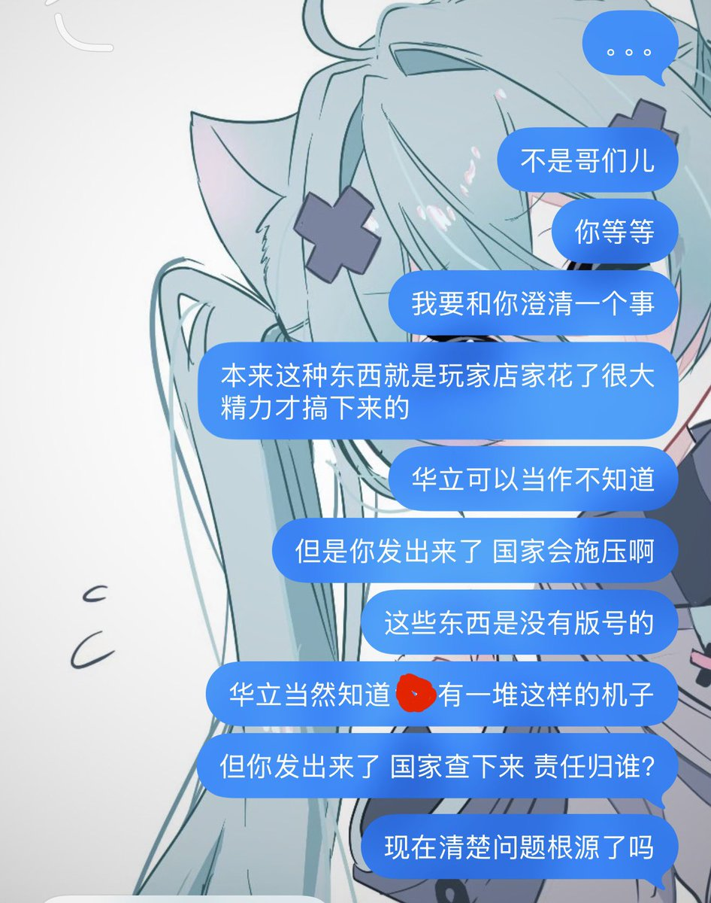

Aoi M
@aoim33
@CldGeo 断章取义玩的很溜嘛你小子

Aoi M
@aoim33
中国で舞萌 (中国版maimai) を遊んでいるプレイヤーだが、ある地域で偶然日本版筐体に触れる機会でその写真をTwitterに投稿した
日本語圏のTLではほとんど反応もなく、大きな炎上も起きなかったのに、なぜか国内のSNSやQQで大規模な誹謗中傷を受けることになった。正直、その違和感に戸惑っている https://t.co/tjXEvQSZLs
九鸟
@CldGeo
牛的👍发日框照片不承认自己有问题，那你爱发多发吧我拦不住你😄劝你一下有这么难？
https://t.co/bpYxzhY93Q https://t.co/l3hFp6ZBnH